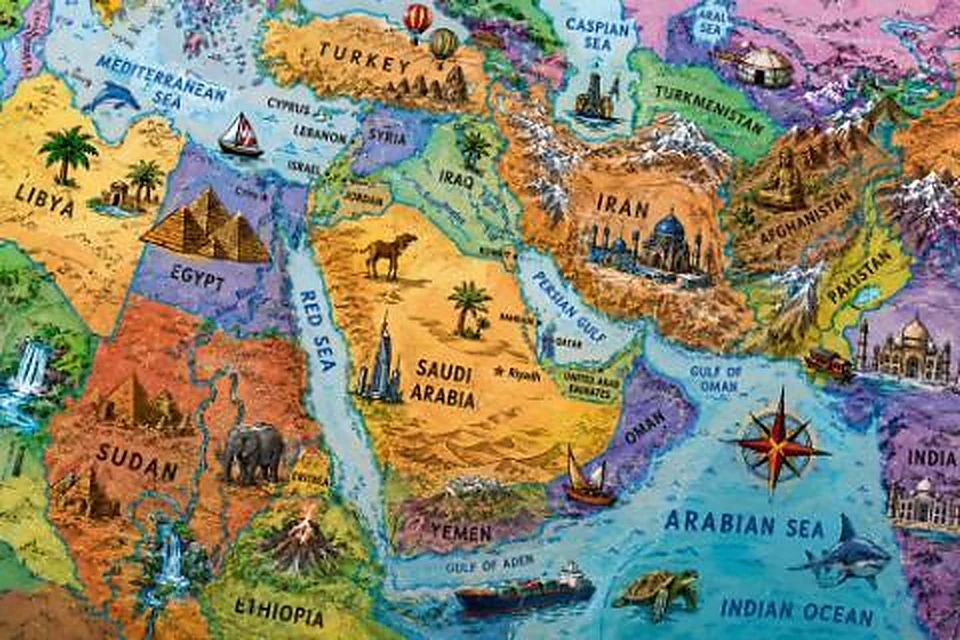

معرفة عامة
جغرافيا
دول وعواصم وجبال وأنهار وبحار. وين تقع؟ وش يحدّها؟ وأي قارة؟
١٣٢ سؤال
من ١٠٠ إلى ٥٠٠ نقطة
العب هذي الفئة — مجاناً
أسئلة من الفئة
-
١٠٠ نقطة
ما عاصمة فرنسا؟
الإجابة: باريس -
٢٠٠ نقطة
ما أطول نهر في العالم؟
الإجابة: نهر النيل -
٣٠٠ نقطة
ما عاصمة البرازيل؟
الإجابة: برازيليا